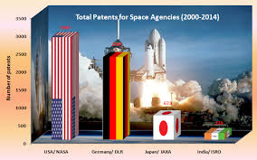

ISRO built India's first satellite, Aryabhata, which was launched by the
Soviet Union on 19 April 1975.[18] It was named after the mathematician
Aryabhata. In 1980, Rohini became the first satellite to be placed in
orbit by an Indian-made launch vehicle, SLV-3. ISRO subsequently
developed two other rockets: the Polar Satellite Launch Vehicle (PSLV)
for launching satellites into polar orbits and the Geosynchronous
Satellite Launch Vehicle (GSLV) for placing satellites into
geostationary orbits. These rockets have launched numerous
communications satellites and Earth observation satellites. Satellite
navigation systems like GAGAN and IRNSS have been deployed. In January
2014, ISRO used an indigenous cryogenic engine CE-7.5 in a GSLV-D5
launch of the GSAT-14.
FORMATIVE YEARS

Modern space research in India is traced to the 1920s, when scientist S.
K. Mitra conducted a series of experiments leading to the sounding of
the ionosphere by applying ground-based radio methods in Kolkata.[28]
Later, Indian scientists like C.V. Raman and Meghnad Saha contributed to
scientific principles applicable in space sciences.[28] However, it was
the period after 1945 that saw important developments being made in
coordinated space research in India.[28] Organised space research in
India was spearheaded by two scientists: Vikram Sarabhai—founder of the
Physical Research Laboratory at Ahmedabad—and Homi Bhabha, who
established the Tata Institute of Fundamental Research in 1945.[28]
Engineers were drawn from the Indian Ordnance Factories on deputation to
harness their knowledge of propellants and advanced metallurgy as the
Ordnance factories were the only organisation specialising in these
technologies at that time.[citation needed] Initial experiments in space
sciences included the study of cosmic radiation, high altitude and
airborne testing, deep underground experimentation at the Kolar
mines—one of the deepest mining sites in the world—and studies of the
upper atmosphere.[29] Studies were carried out at research laboratories,
universities, and independent locations.